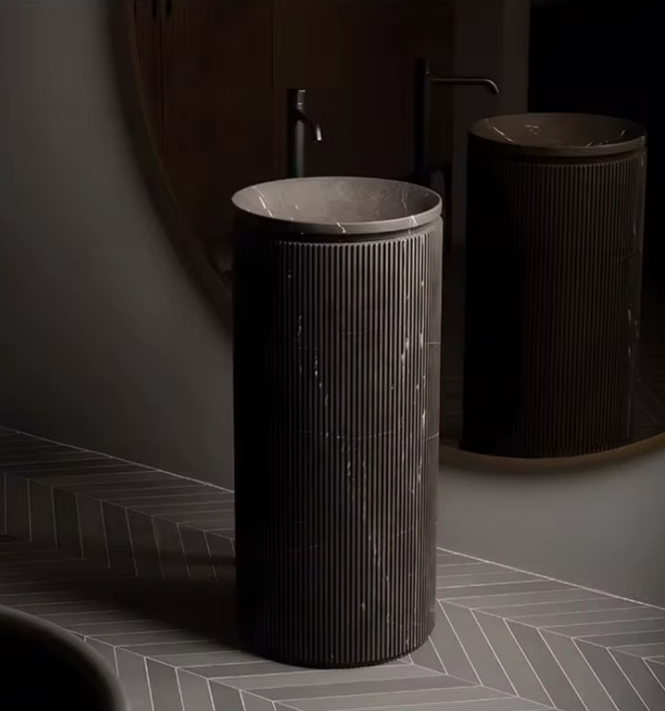

STANDWASCHBECKEN
Standwaschbecken AURELIO Marble
2.490,00 €
Details ansehen
Stand- und Wandwaschbecken aus Naturstein – klar kuratiert, schnell vergleichbar.


Wir haben Ihre Nachricht erhalten und melden uns bald bei Ihnen.